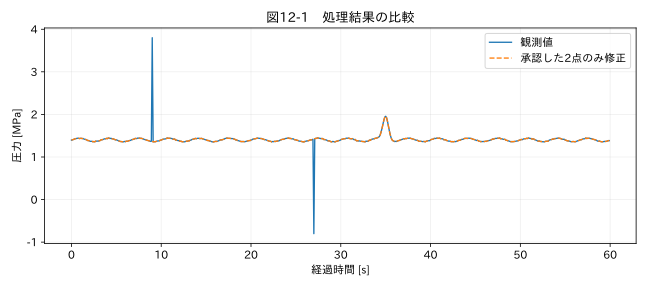

第III部 欠損値と異常値を扱う / 第12章
この章の節
突発ノイズ・スパイクの除去
学習目標
孤立したスパイク候補を見つけ、メディアン処理の副作用を評価する。人が承認した点だけを修正し、真のピークを保持する手順を作る。
12.1 一点だけなら消してよいか
配管に衝撃が加わった瞬間の加速度は、サンプリング条件によって一点だけのピークに見えることがある。一点だけ突出しているという形状は、通信ノイズの証拠ではない。センサーの帯域、サンプル間隔、別チャンネル、試験イベントを確認する。
本章の圧力教材では、生成時に9秒と27秒を測定スパイクと定義している。この正解情報を確認した後だけ、修正を承認する。実務ではこの正解情報に相当する証拠を、ロガーエラー記録や独立測定から集める必要がある。
12.2 メディアンフィルタの働き
5点 [1,1,10,1,1] の中央値は1、平均は2.8である。メディアンは少数の極端値に影響されにくく、孤立ノイズを抑えられる。しかし同じ形が真の衝撃なら、その衝撃も除去する。演算はデータの原因を知らない。
5点窓では、窓内の多数を占める側へ値が寄る。短い幅のパルス、角、細かい周期成分が変形し得る。移動平均のような線形フィルタではないので、すべての入力に共通する単純な周波数応答だけで説明できない。ピーク幅と窓幅の関係を実波形で検証する。
端点では、範囲外をゼロで埋める、端の値を反復する、反射するなどの方法がある。SciPyの関数でも端点の規則が異なる。本書は scipy.ndimage.median_filter(..., mode='reflect') を使い、外側が反射して続く仮定を明示する。端点の結果を実測として扱うわけではない。
12.3 候補、提案値、採用値を分ける
自動処理は三段階に分ける。第一に、Hampelなどで候補を付ける。第二に、メディアンや補間から修正提案値を作る。第三に、証拠を確認して承認された点だけに提案を適用する。元の値、候補理由、提案値、採用状態、承認理由を同じ記録IDへ結び付ける。
| 記録ID | 元の値 | 候補理由 | 提案 | 最終判断 |
|---|---|---|---|---|
| 圧力90 | 3.8 MPa | 局所突出 | 近傍中央値 | 模擬の正解情報で不具合と確認 |
| 圧力270 | −0.8 MPa | 局所突出 | 近傍中央値 | 同上 |
| 35秒付近 | 約1.9 MPa | 全体分布から離れる | 変更しない | 実パルスとして保持 |
候補を全件採用するためのボタンを既定にしない。多数の点を確認する場合は区間単位の承認ルールも使えるが、条件、例外、担当者、対象データ版を残す。データが更新されたら以前の行番号だけで承認を再適用しない。
関連する詳細実験は実践補講に掲載。入力形式・同期・補間・校正・多変量・チャンク境界を扱う。
実行するコードと結果
run.py · 共通処理の全ソース
教材フォルダで python examples/chapter12/run.py を実行。以下は省略のないスクリプト。共通モジュールは教材一式に含む。
from pathlib import Path
import sys
ROOT=Path(__file__).resolve().parents[2]
sys.path.insert(0,str(ROOT))
sys.path.insert(0,str(ROOT/'examples'))
import numpy as np
import pandas as pd
from common import load,truth,seconds,plot
from tsclean.core import numeric,timestamps,time_flags,hampel,freeze_candidates,interpolate_short,compare
from scipy.ndimage import median_filter
df=load('02_pressure');x=df['測定値'];proposal=pd.Series(median_filter(x,size=5,mode='reflect'))
# この模擬問題ではmanifestで測定不具合と判明した2点だけを承認した。
approved=pd.Series(False,index=x.index);approved.iloc[[90,270]]=True
y=x.where(~approved,proposal)
print('承認修正数:',int(approved.sum()),'実現象のピーク保持:',bool(y.iloc[350]==x.iloc[350]))
plot(12,seconds(df),{'観測値':x,'承認した2点のみ修正':y},'圧力 [MPa]')
検証環境での実行結果を開く
承認修正数: 2 実現象のピーク保持: True

12.4 修正後に何を比較するか
図12-1では二つのスパイクだけが置換され、35秒付近の山は元の値のまま残る。最大値だけを比較すると、修正前3.8 MPaから下がることが分かるが、それだけでは正当化できない。修正位置が承認した2点と一致するか、非対象点が一つも変わっていないかを確認する。
近傍中央値も真値ではない。圧力が変化中なら、その値は推定誤差を持つ。欠損として残して解析対象外にする方法と、推定値で置換する方法を比較する。最大圧力のような評価量に直接関わる場合は、置換値に依存した結論を避ける。
12.5 自動修正を限定する
通信エラーと値の無効化が機器仕様で明確に対応し、許容補間区間も検証されているなら、承認済みルールとして自動化できる。しかし検出器が強く反応しただけでは、測定異常の確認にはならない。最終章の汎用アプリはスパイク候補の検出までを行い、自動置換は実装しない。値を変える機能は条件付き欠損補間に限定し、本章の承認修正例は独立した教材として提供する。
演習
基礎演習
二点だけの修正を実行し、350番の値が元の値と完全に一致することを確認する。
応用演習
全点へ5点メディアンを適用した結果と、承認2点だけを修正した結果を比較する。変更点数と真のパルスの最大値を求める。
実務演習
加速度の一点ピークに対して、別のセンサーも同時に反応したが通信ログにエラーはなかった。自動修正の判断を説明する。
演習解答・解説を表示する
基礎：承認修正数2、実現象ピークの保持はTrueとなる。原本CSVは変更されない。
応用：全点フィルタではノイズを含む多数の観測が変わる。処理対象を候補点に限定した場合と、波形全体の平滑化を区別する。結果の最大値とタイミングを比較する。
実務：物理的な衝撃の可能性が高まるため保持する。センサー間の独立性、共通電源ノイズ、同期精度も調べる。原因未確定なら候補のまま残す。
章末まとめ
スパイクの形状は原因を示さない。候補検出、修正提案、承認、適用、差分検証を分けることで、重要なピークの消失を防ぐ。